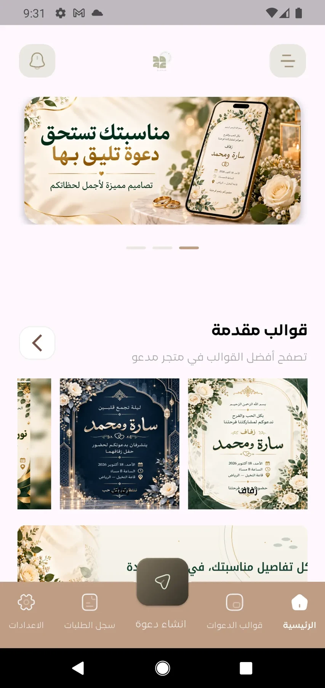
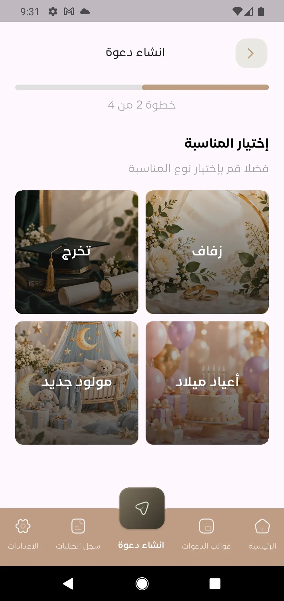
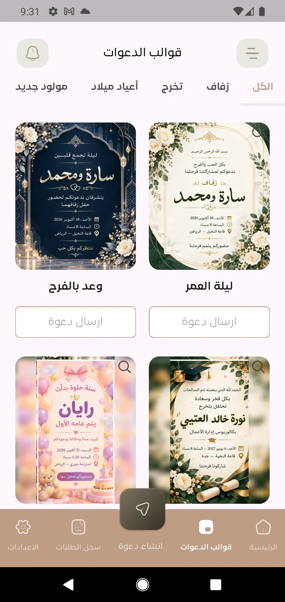

Choose the occasion
Wedding, graduation, birthday and newborn categories.
An Arabic-first invitation experience for choosing an occasion, exploring designs, selecting a package and entering event details.



Screens from the app experienceShaped the multi-step invitation experience, Arabic-first interface, invitation examples and dedicated product screens.
Wedding, graduation, birthday and newborn categories.
Browse templates and review the invitation preview.
Choose a package and continue to the event details.
Layout, navigation and typography support the right-to-left product experience.
The flow separates occasion, design and package choices into focused steps.
Scroll to explore. Select a screen to open the full view.
App source is private. Presentation repositories contain public project information and media. Project information reviewed October 6, 2026.